Making Complex Salary & Benefits Setup Feel Simple
How we turned a scattered, risky payroll system into a clear monthly routine HR teams can trust.
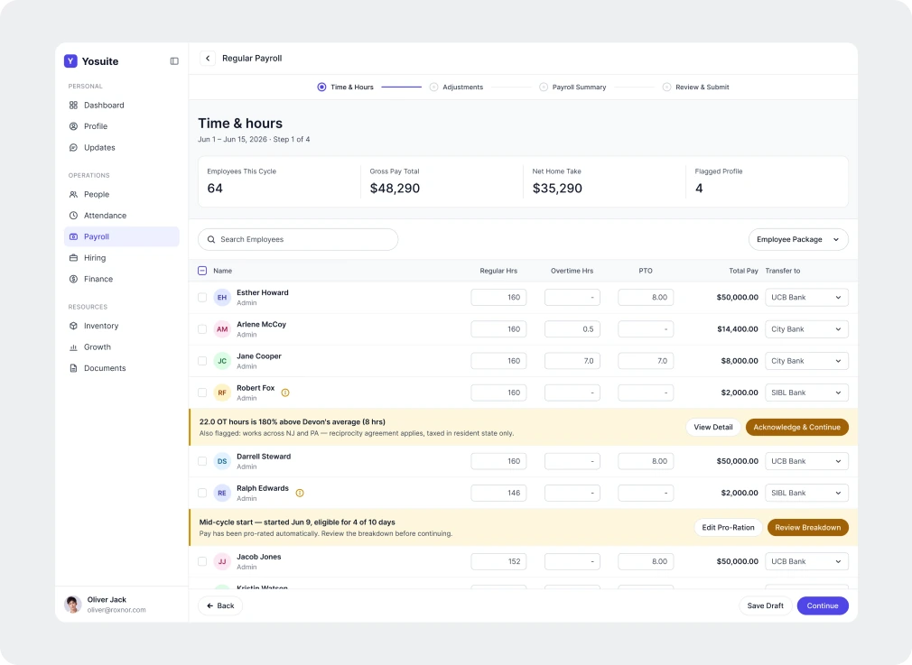
Project Overview
Payroll is one of the most sensitive jobs inside any company. If a number is wrong, a real person gets paid the wrong amount. That's a lot of pressure for an HR team, especially when they do it every single month.
In this project, I worked as a Product Designer on a SaaS HRM platform. My focus was the payroll module: salary structures, benefits, payroll settings, and the monthly payroll run. Here's how we made it simpler.
The Problem
The system was powerful. It could handle many salary types, allowances, deductions, benefits and pay cycles. The problem was that users couldn't see or control all of this with confidence.
- Settings were scattered.Salary rules, benefits, tax and pay cycles lived on different pages. Users jumped back and forth and often missed a step.
- No clear link between rules and results.Changing one rule could affect many employees, but users only found out after payroll was processed.
- Too much manual work.Many employees share the same salary structure, but HR had to set things up one by one.
- Fear of mistakes.There was no simple review step before approval. Fixing errors after payment meant extra work and unhappy employees.
Research & insights
I studied how HR and finance teams run payroll today, reviewed the existing system, and looked at how other HR tools solve the same problems.
- Payroll is a monthly ritual: Teams follow almost the same steps every cycle. They need a clear path, not a blank settings page.
- Most salaries follow a few patterns. Users want to set a structure once and reuse it.
- Trust needs visibility: People feel safe only when they can preview totals before they approve.
Who It's For
Runs payroll every month. Sets up new hires, salary changes and benefits. Needs a clear step-by-step process, reusable templates, and a way to catch mistakes early.
Reviews and approves payroll before money goes out. Needs a quick summary, clear changes from last month, and confidence that nothing is missing.
Design Goals
- Guide the process: Turn payroll into clear steps.
- Set once, reuse often: Users want to set a structure once and reuse it.
- Show the impact: Preview changes before saving.
- Make it safe: Review, approval and history.
The Payroll Flow
Before designing any screen, I mapped the full journey. This helped the whole team agree on every step, decision point and edge case.
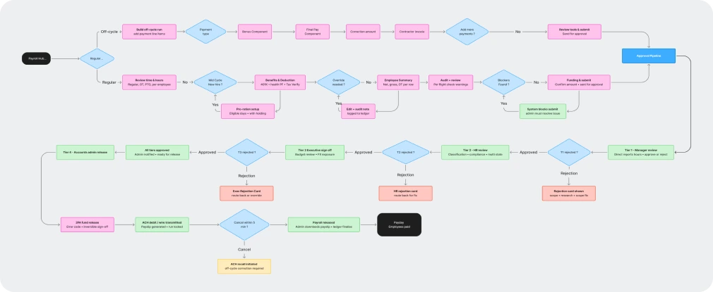
Payroll as a step-by-step process
Instead of one long form, payroll is split into clear stages. A progress bar shows where you are, what's done, and what still needs attention. Users can save and come back later.
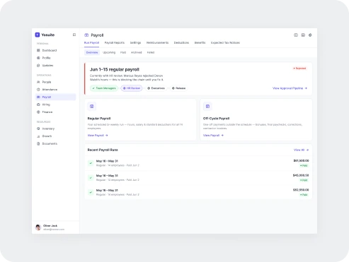
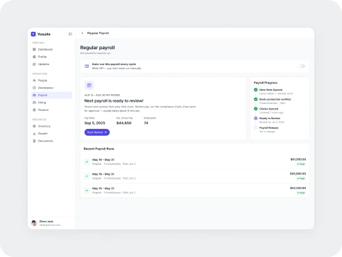
Salary structures as templates
HR creates a salary template once — basic pay, allowances, deductions — and assigns it to many employees at the same time.
- Add or remove salary components easily
- Use fixed amounts or a percentage of basic pay
- Assign in bulk by department, role or grade
If a template changes, the system shows which employees will be affected before saving.
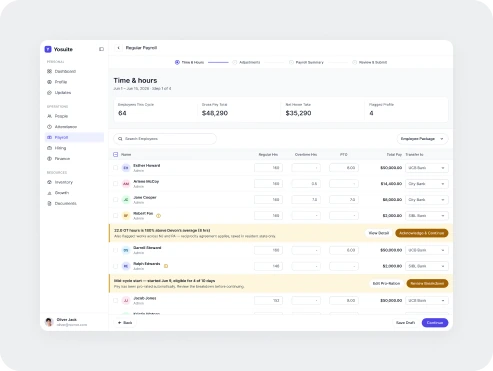
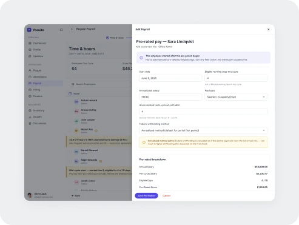
Benefits in one place
Benefits like health, transport or meal allowance are managed from one page. Each benefit has simple rules: who gets it, how much, and from when.
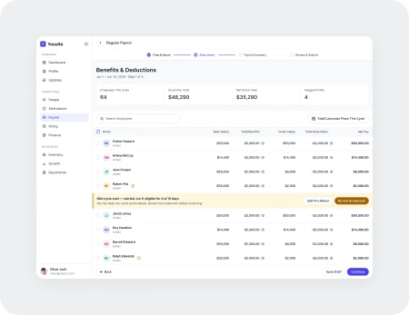
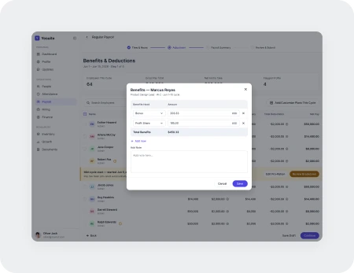
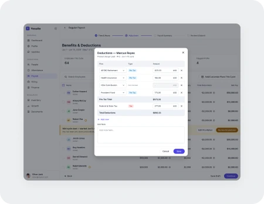
Employee-level adjustments
Some employees need special cases, like a one-time bonus or extra deduction. These can be added for one person in the current cycle, while the main template stays the same. Every adjustment is clearly marked so reviewers notice it.
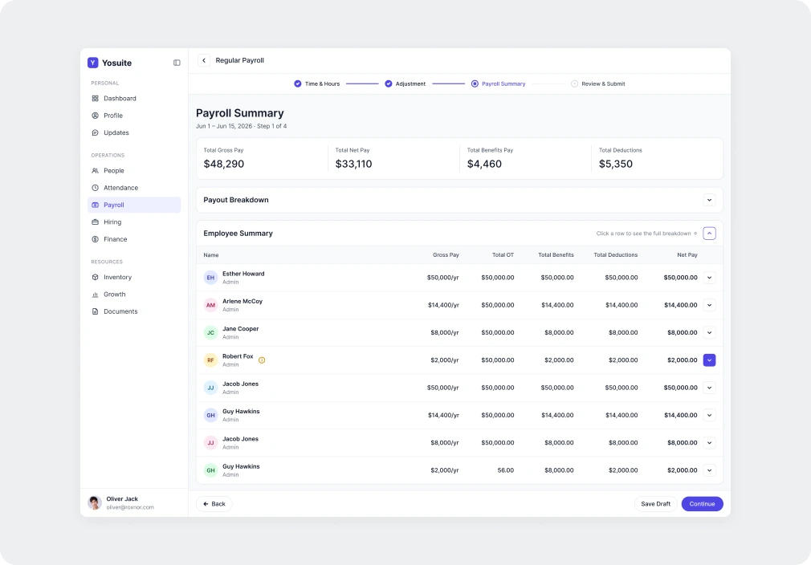
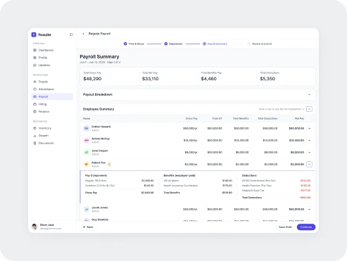
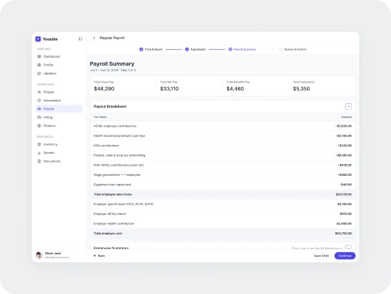
Review before approve
Before payroll is final, users see a summary: total cost, number of employees, and what changed from last month. Warnings highlight missing data or unusual numbers, so problems get fixed early.
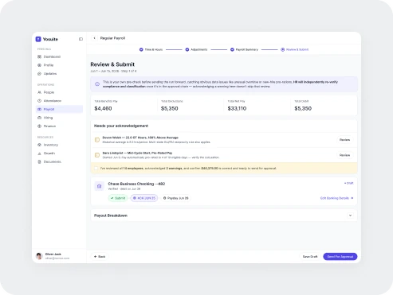
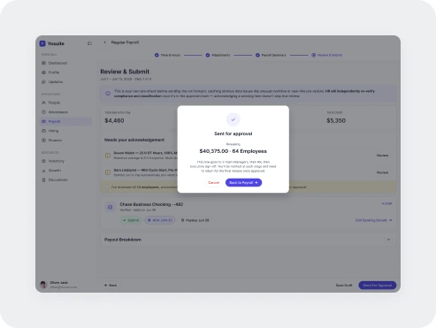
Approval and history
Finance can approve or send back payroll with a comment. Every run is saved with a status — Draft, In Review, Approved, Paid — so the team can always see who did what.
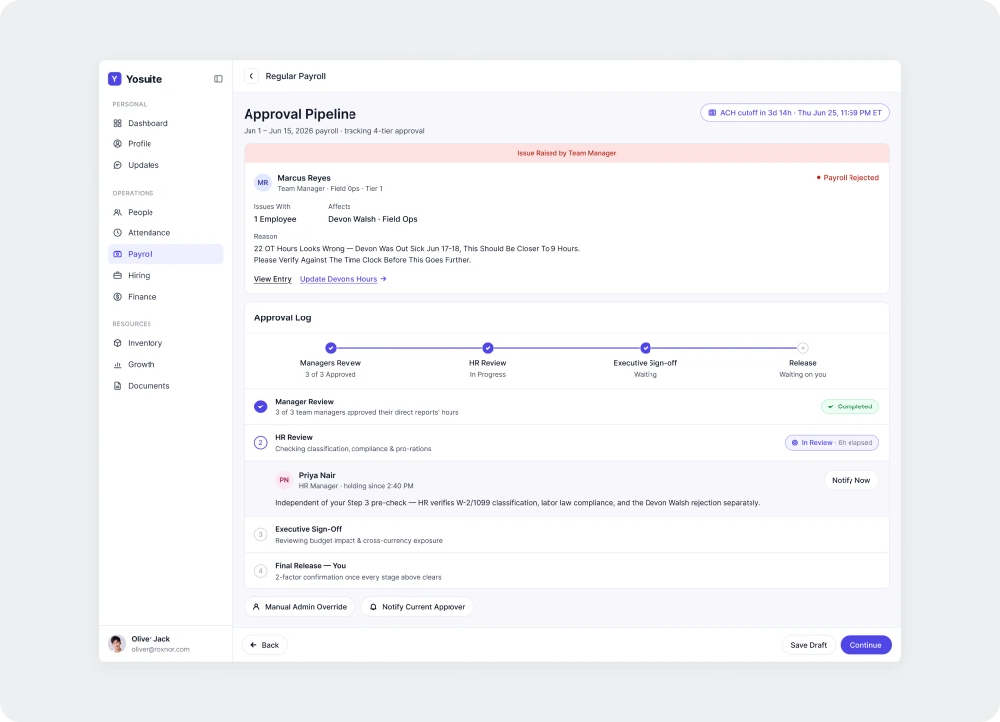
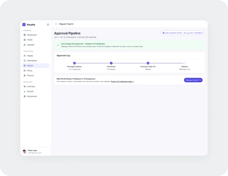
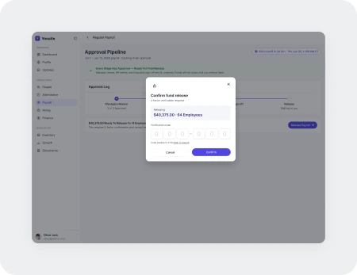
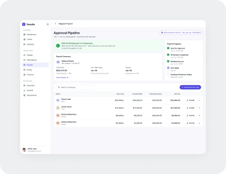
Final Payroll Release
- Two-Factor Authentication Popup: Open a secure modal requiring a quick verification code before anything is finalized.
- Clear 6-Digit Code Inputs: Provides a simple, spaced-out layout for typing in the verification numbers effortlessly.
- One-Click Release Confirmation: Activates a prominent button to instantly complete the transfer once verified.
- Visual Step-by-Step Progress: Shows a vertical timeline tracking each milestone from HR review to final release.
- Instant Success Banners: Displays a green confirmation message verifying that funds are successfully on the way.
- Detailed Payment Summaries: Keeps the individual employee breakdown handy so you can review or download receipts instantly.
Review & Submit
Before anything goes for approval, admins get one clear checkpoint. Flagged items, like overtime spikes or mid-cycle hires, are listed with a Review button. A final checkbox confirms the total payout. Nothing moves forward until the admin has actually looked at it.
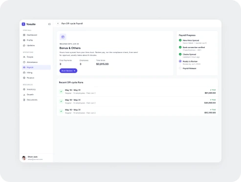
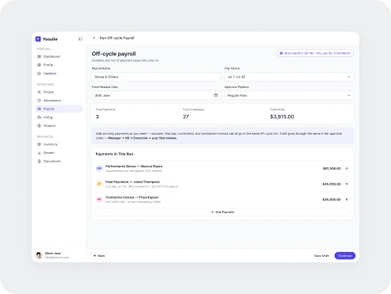
Add Payment and Manage Pay Components
- Termination: I designed a structured framework to process complex final payouts, severance, and accrued leave balances for exiting team members.
- Bonus: I engineered an intuitive calculator to allocate one-off performance rewards with real-time tax adjustments.
- Reimbursement: I implemented a quick-entry logging system to credit business expenses and stipends directly into the active run.
- Contractor: I built a streamlined invoice entry interface tailored for 1099 staff that bypasses traditional employee tax structures.
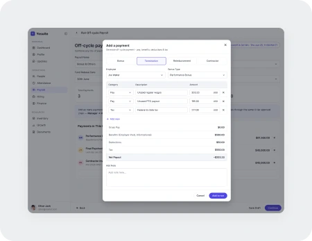
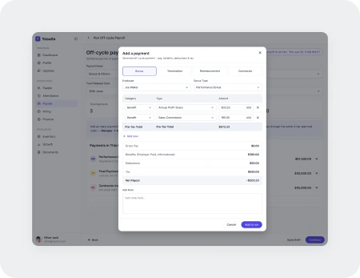
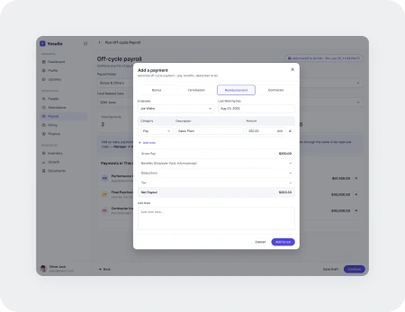
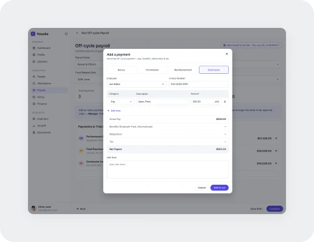
Benefits Settings
HR teams often manage dozens of perks, and each one affects payroll differently. Some add money to a paycheck, some take money out, and some don't touch payroll at all. Mixing them in one long list makes mistakes easy.
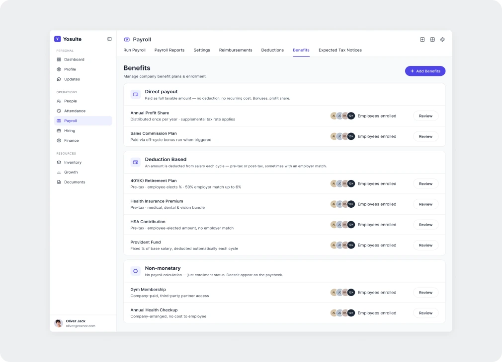
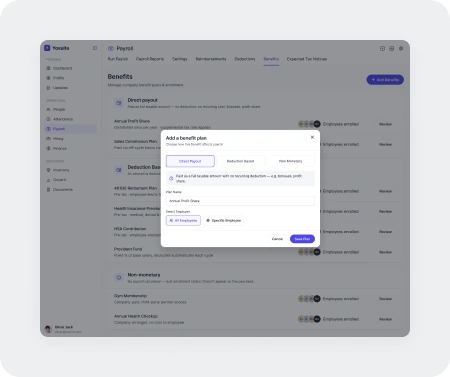
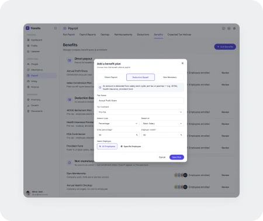
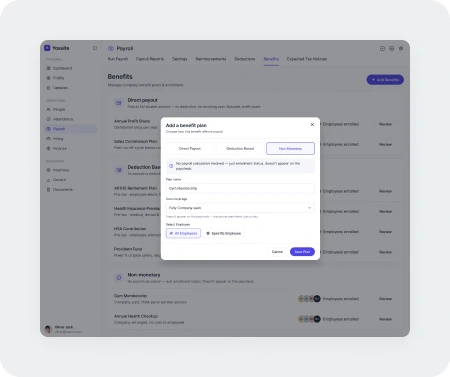
- Non-Monetary Program Sourcing: Created a simplified interface for zero-payroll perks, hiding unnecessary financial fields.
- Deduction Configuration Engine: Built a conditional layout enabling precise tax mapping and granular contribution logic.
- Direct Payout Provisioning: Designed a streamlined onboarding path to easily name and segment cash-based programs.
Payroll & Compensation Settings
Before payroll can run, a lot has to be set up: when people get paid, which bank the money comes from, who approves each run, and how each type of worker is paid. In many tools these settings are spread across different pages, so admins waste time hunting for them.
- Overtime Policies: Prepared an automated calculation interface to set daily overtime thresholds and map specific funding accounts to individual employee rolls.
- Approval Delegation: I built a flexible routing dashboard to safely delegate payroll review and processing rights to department leads during active cycles.
- Tax & Compliance: Implemented a localized compliance console to toggle automated tax withholdings, state reporting flags, and federal identification data.
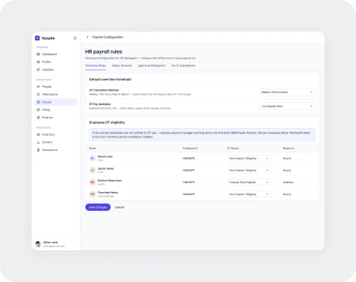
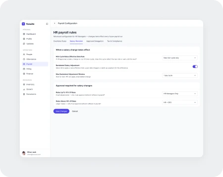
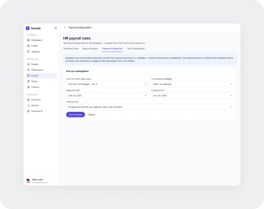
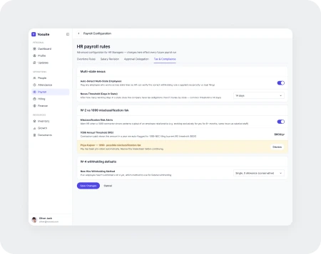
Validation & Testing
- Task testing with HR users: run an off-cycle termination payout and check whether they finish without missing fields.
- Review with finance experts: check that approval steps and the 2FA release step match how real finance teams work.
- Real-use feedback: after launch, track where admins get stuck during mid-cycle changes, then improve those spots.
Outcome
As a concept, success was about whether the model stays legible and safe under real complexity. Measured against the problems I set out with: